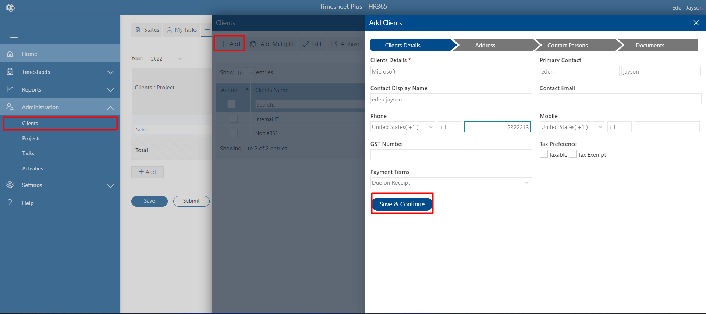

Administration
-
Table of content
Clients
Admin can able to add single or multiple client details at a time. Admin can able to edit, delete, disable, enable, etc.
Add:-
Click on +Add tab, this displays Add client page.
-
Enter mandatory field client details and other details and click on Save & Continue button.
 -
Enter the fields for address, contact person and add document.
-
Click on Submit button.
Here you can add multiple clients using CSV file, first download the sample file and add data into it as mentioned format, import the same CSV file and finally client on Save button as shown in below.
Edit:
Admin can be able to edit the client details. Select the check box and click on the Edit tab. Update the details and click on Save & Continue button and finally, click on Submit button.
Archive:
If the admin achieves any clients, those clients will not be displayed in the client name dropdown on the add project page.
Disabled/Enable:
If disabled, the admin cannot create or add a project for that client. That client would not display in the client dropdown list while adding projects.
Delete:
To delete the client delete, select the check and click on the Delete tab.
Projects
Admin can able to add single project for single client. Admin can able to edit, delete, disable, enable, etc.
Add
-
click on Add tab, project page will display.
-
add the mandatory fields.
-
If you want to add tasks for same project than proceed with clicking on Save and Add Task button, Task page will display, add task add finally click on submit button as shown in below.
-
If you want create tasks later simply click on Save button.
Project Start date: If you not assign project date by default it would be current date.
Project Team member:You can assign tasks for users those who are added in Project Team member field. Users get added automatically in the Timesheet user page once you add in project team members' field.
Program Manager: If we enable this feature from settings from side panel under setting, under features, enable toggle switch in “Enable program manager” then it will display in the add project page. program manager can be able to approve project manager’s timesheets.
Add Client Name: You can also add new client name from here those which are not added.
Add Client Name: If this feature is enabled from settings from side panel, under setting, under feature tab in “Enable onsite billing” row, click on save settings button than it will be visible in the add project page where you can assign on site bill type for the project instead of based on project and individual.
Add Client Name: If this feature is enabled from settings from side panel, under setting, under feature tab in “Enable onsite billing” row, click on save settings button than it will be visible in the add project page where you can assign on site bill type for the project instead of based on project and individual.
You can add on site rate for users individually from user page under setting from side panel.
Enable Global task: If it is enabled, global tasks which are created from Task under Administration will be show for that project in task column in weekly timesheet and track time.
Add Bulk Users: You can add bulk users in project team using CSV file. Please click on add bulk user link, popup will display, download the CSV file and add data in it as per specified format, import it then click on Add and finally click on OK button.
Add MultipleHere you can add multiple projects using CSV file, first download the sample file and add data as specified format, import the same CSV file and finally client on Save button as shown in below
EditYou can able to edit the project details, just select the check box and click on Edit tab, edit the details as per your need, click on Save button.
ArchiveIf you do achieve for projects such projects will not display in project name field in add task page due to which you cannot create tasks for such projects. To archive it, select it then click on status tab then select the archive. To restore it back to active, click on archive tab, you can find archive projects, select it and click on status tab then select restore.
DisabledIf you disabled project, such projects will not visible in weekly timesheet and track time due to which users are not able to submit timesheet of such projects.
DeleteYou can able to delete the project, just select the check box and click on Delete tab..
Tasks
Here you can add or create task for the projects and you can assign it.
Add-
Please select task under administration and click on Add tabs to create single task.
-
First select the client from client dropdown field, all projects related to that client will display under project name, select projects, fill all details and assign user
-
finally on submit
-
If the Mandatory task start date and end date are enabled in settings under the features tab, then the admin cannot skip the task start date and task deadline field during creating the task.
-
If you want to assign a task to a new user, that user should be a part of the project so first add the user to the project then you can be able to assign Go to the projects under administration from side navigation panel, select the specific project and click on Edit tab, add user to Project team member and click on save button or task link. If you click on task, you can add and assign task from there itself no need come task module under administration and assign or add task for a new user.
-
User can be able to see his tasks those which are assigned to him from My task tab in home page
Here you can edit the task like task name, task id, task deadline, assign task etc.
Delete:If you want to delete the tasks, just select it and click on Delete tab.
Add Multiple Task:Here you can add multiple tasks for multiple projects in one go using CSV file.
Click on add multiple tabs, download the CSV sample file and fill the details as per specified format, choose the CSV file and click on save button.
Global Tasks:
It is a task which is used by all the users and all for projects. For a global task, no need to assign tasks.
If global task field is selected for the projects, user can select global task for that during the submission of weekly or daily timesheets (track time).
Self-Assign Task:
If you want to allow user to create tasks by their own, just you need to enable that feature from settings. To enable it go to settings from side panel under settings, under features tab, enable toggle in “Self-Assign Task” row and click of save setting button. Task tab will display in home page from where users can create tasks.
Allow self-assign task billable:
If it is enabled, users can create billable task. To enable it go to settings from side panel under settings, under features tab, enable toggle in “Allow self-assign task billable” row and click of save setting button.
Activities
Admin can able to create various activities. You can create activities based on global, task-specific, and project-specific. If the display activities feature is enabled in settings under the general tab, you can able to see the activities option from the side navigation panel under administration and also in weekly timesheets and track timetable from where user can select activities for their timesheets.
- If activities are global type, all users can select activities for all the projects.
- If activities are task specific, only it is available on selection of that specific tasks in weekly timesheets or tack time for the users.
- If activities are project specific, only it is available on selection of that specific project in weekly timesheets or tack time for the users.
Add Activities
-
Click on Activity from the side panel under the navigation panel. This displays the activity page.
-
Select the activity type as per your requirement. Click on + Add tab, this displays Add activity page.
-
Enter the activity name and click on submit button.